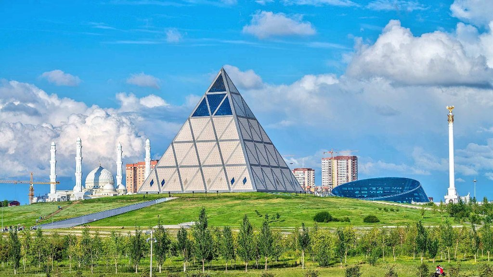
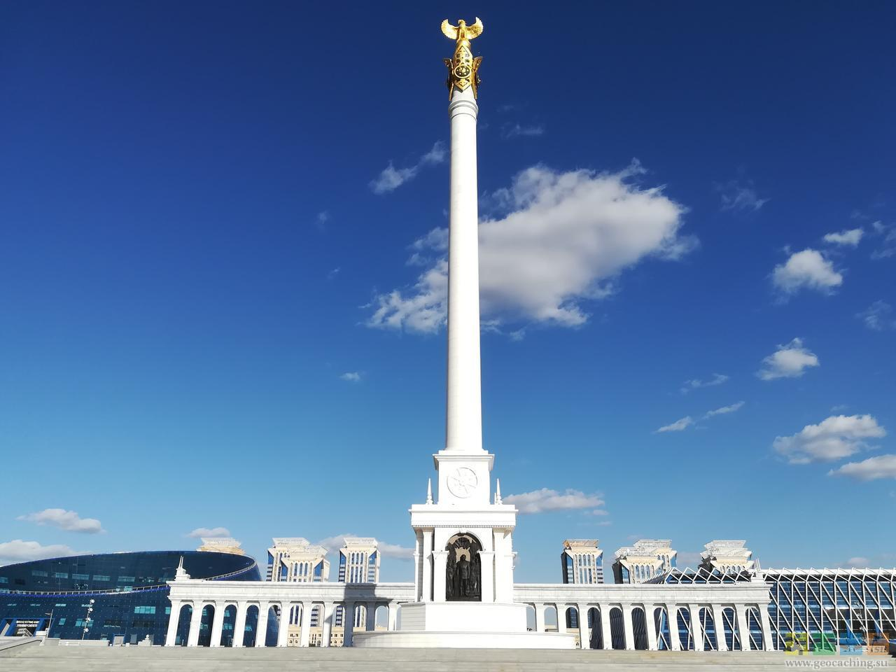

阿斯塔纳
纪念碑“阿斯塔纳-拜特雷克”

该纪念碑于 2002 年在纳扎尔巴耶夫总统的倡议下竖立在中央广场上。 令人印象深刻的 97 米石碑，顶部有一个直径 22 米的镀金球，是根据 A. Rustembekov 的设计制作的。 “Astana-Baiterek”象征着哈萨克人民生活的一个新阶段，其标志是该国首都从阿拉木图转移到阿斯塔纳。
和平与协议宫
金字塔形式的建筑，位于纪念碑“Astana-Baiterek”旁边。 它于 2006 年为在阿斯塔纳举行的国际大会会议而建立，致力于世界宗教和宗教宽容。 该建筑还有一个歌剧院，蒙特塞拉特卡巴莱本人在开幕式上演唱。 今天，这座宫殿被用于展览、会议和音乐会。
纪念碑“哥萨克伊莱
纪念碑位于独立广场。 这是一座91米高的白色石碑，上面刻有神鸟萨姆鲁克的形象。 这个规模不是偶然选择的，因为哈萨克斯坦是在 1991 年成为一个独立国家的。 在靠近基地的地方，纪念碑的四面都有浅浮雕，描绘了现代哈萨克历史上的重要里程碑。